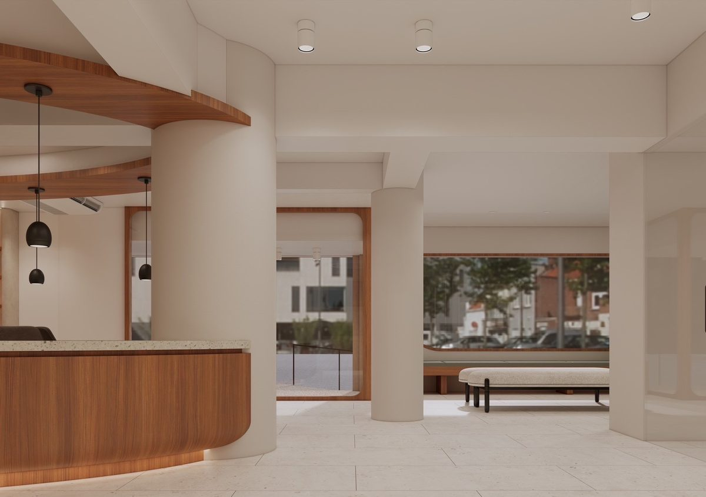
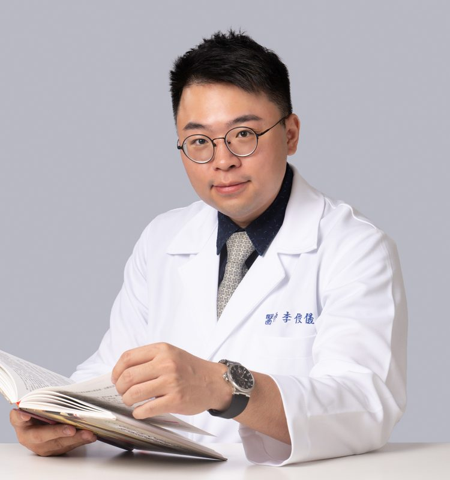
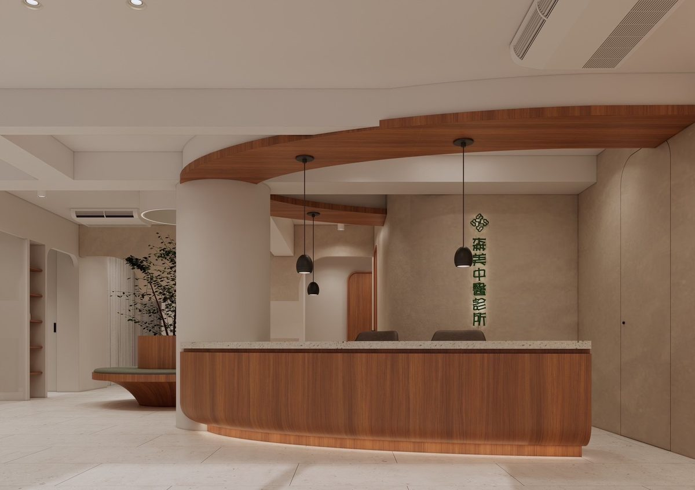
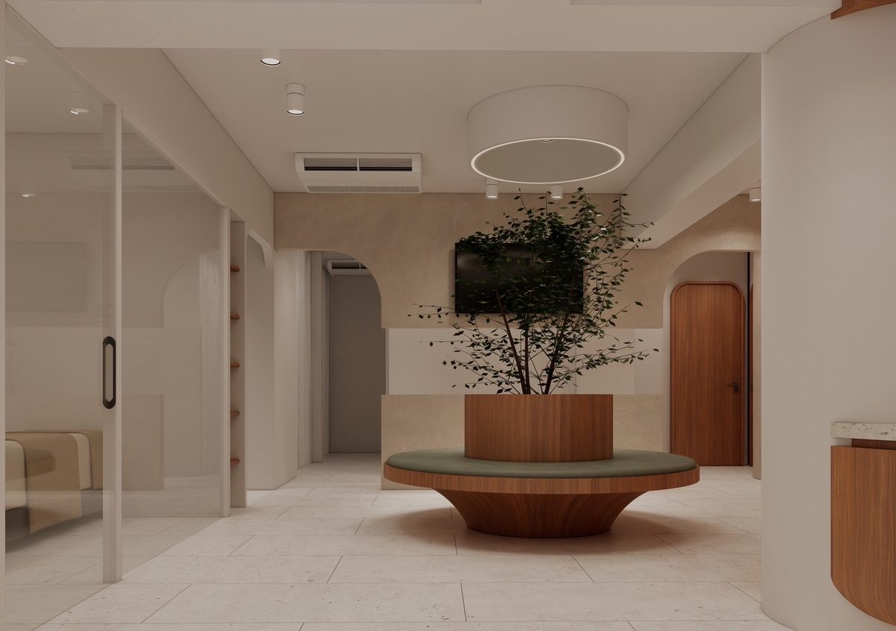
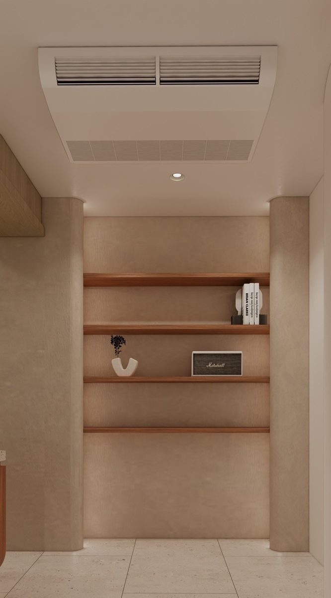
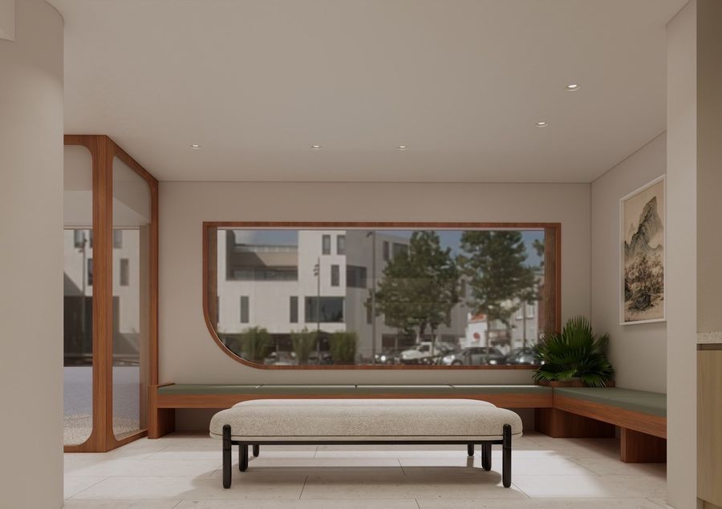

中醫減重
體組成分析儀精確評估，針灸代謝穴位＋埋線＋中藥三管齊下，健康、持久地達成理想體態。
中醫減重 深入了解 →台北大安區 · 中醫診所
「用數據把脈，用溫度開方」
森，代表生機蓬勃的自然能量；
美，代表身心和諧的完整健康。
我們以精準現代中醫，
融合傳統智慧與數據醫學，
為每位患者量身訂製最適切的療程。



關於森美
「森」代表生機蓬勃的自然能量，三棵樹木組成的字形，象徵著診所對生命力與成長的尊重。「美」代表身心和諧的完整健康，美麗從來不只是外在，而是內在平衡向外的真實展現。
森美中醫診所坐落於台北市大安區，以高端醫療美學空間為載體，融合現代科學診療儀器與千年中醫傳承智慧。我們相信每位患者都值得被精準對待、被溫柔照護。
從中醫減重、美顏針到婦科調理，我們用數據分析體質，以個人化方案還原您最自然的健康狀態。

醫師介紹
Dr. Chun-Yi Lee｜森美中醫診所 院長
李俊儀中醫師以「精準中醫」為核心理念，結合現代醫學儀器與傳統辨證論治，為每位患者建立個人化的健康檔案。他深信中醫的智慧在於整體觀——身體的每一個訊號都是一段對話，需要被耐心傾聽與解讀。
在針灸領域，李醫師尤其精通超微針刀技術，以極精細的手法處理筋膜沾黏與慢性疼痛問題；美顏針方面則結合臉部經絡學理，達到自然提升輪廓的效果。
對於中醫減重，李醫師採用體組成分析儀精確評估患者現況，搭配針灸、埋線及中藥調理三管齊下，協助患者達成健康的體重管理目標。
森美中醫診所｜主治醫師
2026/9/8 起看診董芯羽中醫師畢業於中國醫藥大學中醫學系，並輔修運動醫學系，看診領域涵蓋內科、婦兒科、針傷科與運動醫學。她重視從生活型態與身體結構找出病症根源，讓每一次調理都貼近患者真正的需求。
在婦兒科領域，董醫師專精月經失調、經前症候群、備孕調理與兒童轉骨；針傷科方面則擅長處理肌筋膜疼痛、退化性關節炎與顏面神經麻痺等問題，並結合運動醫學背景進行動作功能評估與姿勢矯正。
美容醫學上，董醫師持有 FACE 美顏針專科醫師資格，擅長以美顏針、微針及埋線雕塑，協助患者由內而外調整體態與氣色。
HOURS & CONTACT
| 一 | 二 | 三 | 四 | 五 | 六 | |
|---|---|---|---|---|---|---|
| 10:00 – 13:30 | 9:30–13:00 |
|||||
| 14:00 – 17:30 | 13:00–17:00 |
|||||
| 18:00 – 21:00 |
每診結束前 15 分鐘止掛，會依現場狀況調整｜周日固定休診
TREATMENTS
整合傳統中醫智慧與現代科學技術，每項療程皆依據患者個別體質量身規劃。
體組成分析儀精確評估，針灸代謝穴位＋埋線＋中藥三管齊下，健康、持久地達成理想體態。
中醫減重 深入了解 →精細鬆解筋膜沾黏，有效改善慢性疼痛、肩頸僵硬、腰背痠痛，最小創傷、最大療效。
超微針刀 深入了解 →專利管針沿皮下淺筋膜層水平掃散，處理牽動痛點的「筋膜張力源」，痛感低、幾乎無修復期，怕針也能放鬆接受。
浮針 深入了解 →傳統針灸結合現代精準取穴，適用疼痛管理、自律神經調節、免疫功能強化等多元需求。
針灸 深入了解 →以臉部經絡為基礎，刺激膠原蛋白增生，自然提升輪廓、淡化細紋，無侵入性的回春療程。
美顏針 深入了解 →可吸收醫療線材植入穴位，持續刺激穴道，效果可維持數週，適合忙碌族群的長效調理選擇。
埋線 深入了解 →月經失調、不孕調理、更年期症狀、PCOS等，以中藥與針灸溫和調整女性荷爾蒙平衡。
婦科調理 深入了解 →結合外泌體生物技術與中醫頭皮經絡調理，從根源改善落髮問題，促進毛囊再生與頭髮健康。
外泌體養髮 深入了解 →青春期發育關鍵期的中醫調養，以補腎健脾中藥配合針灸，協助孩子在黃金期充分發展身高潛力。
小兒轉骨 深入了解 →依「冬病夏治」原理，於三伏與三九時節以辛溫藥材敷貼穴位，調節免疫、改善過敏體質，大人小孩皆適用。
穴位敷貼 深入了解 →結合姿勢評估、動作功能檢測與傳統辨證論治，找出運動傷害與慢性疼痛的根本原因，制定個人化治療與運動處方。
運動醫學 深入了解 →結合浮針、頭皮針與低能量雷射（LLLT）整合療法，鬆解肢體痙攣、促進腦神經重塑，加速肢體與語言功能恢復。
中風復健 深入了解 →CLINIC ENVIRONMENT
以森林靜謐為底，木質暖光為引。
讓緊繃身心在呼吸間，優雅尋回平衡。





PATIENT REVIEWS
「長期肩頸疼痛，今天又眼睛漲到有點不舒服，不忍了…經朋友介紹來找李院長做小針刀，過程中痠重感明顯，但幾乎不太有刺痛感，跟想像中的完全不一樣（鬆一口氣 哈哈哈）。結果很神奇的是，過了三個小時後，肩頸竟然就沒有不舒服的感覺了！！！」
「之前右手小指受過舊傷，一直覺得非常緊繃，甚至痛到連毛巾都擰不乾，生活超不便！這次來到森美中醫，李俊儀院長非常仔細，幫我使用了浮針療法。沒想到做完當下立刻覺得緊繃的神經整個鬆軟下來，超級舒服，長年的傷痛真的改善很多！診所位置超棒，對面就是國泰醫院後門，滿分推薦！」
「因為運動傷害造成的手腕疼痛感，經過李醫師針灸及紅外線治療，僅一次的治療就大幅降低疼痛感。診所還有一台神奇的設備，也讓我腰酸找到問題，目前配合治療中，費用比物理治療還低。難得大安區有那麼優質的醫療環境及診療品質，很推薦！」
「醫師的藥一次就讓我的過敏症狀緩解了。」
「很漂亮的中醫診所，環境令人感到輕鬆，李醫師很親切，今天用了很有趣的儀器，用科學的方式點出我姿勢的問題。」
「因為對筋膜針刀有興趣來診，意外體驗了 OutBody 機器——它用 AI 分析體態，顯示姿勢偏移了幾公分，還會用動態虛擬骨骼呈現未來體態變化，超直覺！診所先用現代科學了解身體狀況，再進行調整整治，我覺得更能對症下藥。空間寬敞舒適，中間的小豆樹也養得很美。」
「環境舒服，醫師也細心。與其他中醫不同的是，診所內不只有 InBody 來測量體重、體脂，還擁有少見的 OutBody 來做全身掃描，讓我能夠更直觀地看到自己的體態並做進一步了解，真的超讚的！」
「我是一位 65 歲的家庭主婦，右手因為長年提重物，導致右上臂跟手肘深處的筋膜非常痠痛，看過很多地方都沒好。今天來到森美中醫，李院長評估後決定用針刀與浮針治療。治療完畢後，手部的疼痛感竟然奇蹟般地大幅減輕了，好神奇！」
「跌傷痛了好一陣子不見好，動起來卡卡的。看了李醫師後才知道是瘀傷，外表沒事但裡面的組織沾黏了，透過醫師精湛的針刀手術舒緩許多。環境乾淨舒適，完全沒有印象中比較陰暗的中醫樣子。」
「長期肩頸疼痛，今天又眼睛漲到有點不舒服，不忍了…經朋友介紹來找李院長做小針刀，過程中痠重感明顯，但幾乎不太有刺痛感，跟想像中的完全不一樣（鬆一口氣 哈哈哈）。結果很神奇的是，過了三個小時後，肩頸竟然就沒有不舒服的感覺了！！！」
「之前右手小指受過舊傷，一直覺得非常緊繃，甚至痛到連毛巾都擰不乾，生活超不便！這次來到森美中醫，李俊儀院長非常仔細，幫我使用了浮針療法。沒想到做完當下立刻覺得緊繃的神經整個鬆軟下來，超級舒服，長年的傷痛真的改善很多！診所位置超棒，對面就是國泰醫院後門，滿分推薦！」
「因為運動傷害造成的手腕疼痛感，經過李醫師針灸及紅外線治療，僅一次的治療就大幅降低疼痛感。診所還有一台神奇的設備，也讓我腰酸找到問題，目前配合治療中，費用比物理治療還低。難得大安區有那麼優質的醫療環境及診療品質，很推薦！」
「醫師的藥一次就讓我的過敏症狀緩解了。」
「很漂亮的中醫診所，環境令人感到輕鬆，李醫師很親切，今天用了很有趣的儀器，用科學的方式點出我姿勢的問題。」
「因為對筋膜針刀有興趣來診，意外體驗了 OutBody 機器——它用 AI 分析體態，顯示姿勢偏移了幾公分，還會用動態虛擬骨骼呈現未來體態變化，超直覺！診所先用現代科學了解身體狀況，再進行調整整治，我覺得更能對症下藥。空間寬敞舒適，中間的小豆樹也養得很美。」
「環境舒服，醫師也細心。與其他中醫不同的是，診所內不只有 InBody 來測量體重、體脂，還擁有少見的 OutBody 來做全身掃描，讓我能夠更直觀地看到自己的體態並做進一步了解，真的超讚的！」
「我是一位 65 歲的家庭主婦，右手因為長年提重物，導致右上臂跟手肘深處的筋膜非常痠痛，看過很多地方都沒好。今天來到森美中醫，李院長評估後決定用針刀與浮針治療。治療完畢後，手部的疼痛感竟然奇蹟般地大幅減輕了，好神奇！」
「跌傷痛了好一陣子不見好，動起來卡卡的。看了李醫師後才知道是瘀傷，外表沒事但裡面的組織沾黏了，透過醫師精湛的針刀手術舒緩許多。環境乾淨舒適，完全沒有印象中比較陰暗的中醫樣子。」
FAQ